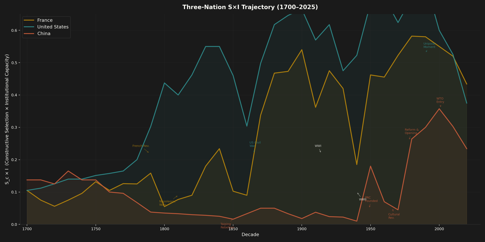
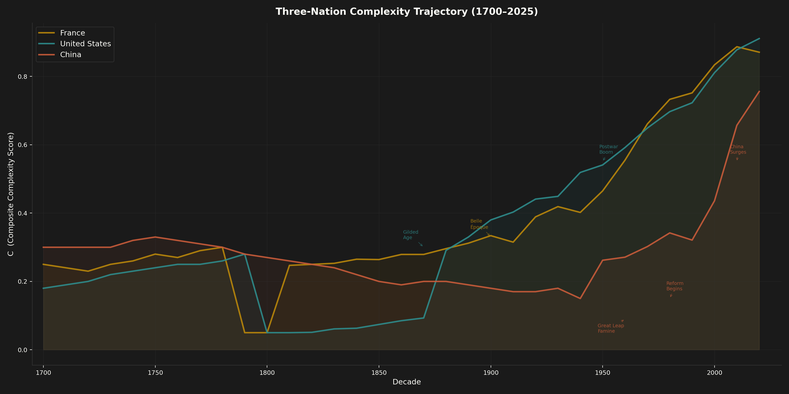
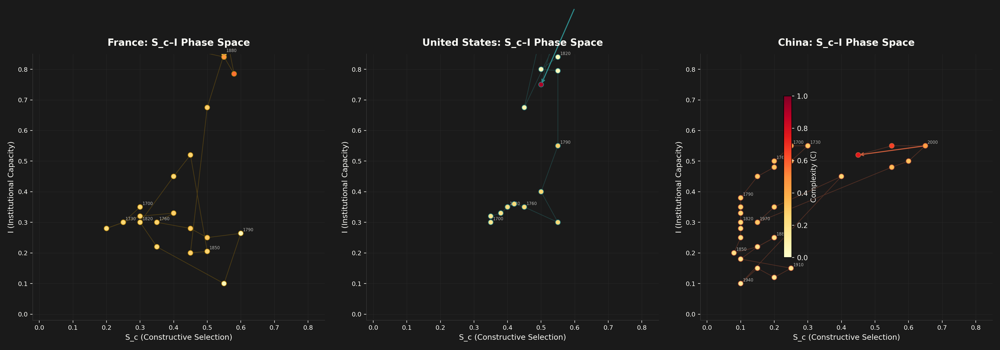
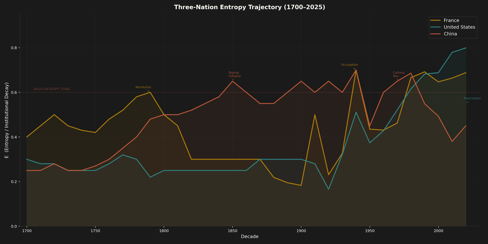
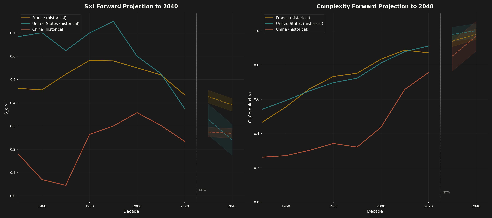
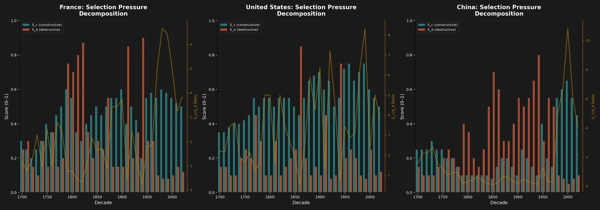

France, America, and China Through the S×I Lens, 1700–2025, with Predictions to 2040
Vitalic Stoicism Project · Modern Nations Analysis · July 5, 2026
The main report tested the S×I framework against twelve historical civilizations across 5,500 years. The core finding held: complexity grows when constructive selection pressure (Sc) and integration capacity (I) combine above a threshold, plateaus when integration alone covers maintenance costs, and collapses when accumulated entropy (E) overwhelms both.
That analysis stopped at the pre-modern boundary. This companion report takes the framework forward into the modern era, applying it to three nations that between them represent the dominant power structures of the last three centuries: France (the revolutionary cycle), the United States (the institutional experiment), and China (the return). A fourth contender, India, appears in the predictions section because the framework demands it.
The question is simple and uncomfortable: where is S×I highest right now, and where will it be in 2040?
Three things make modern application harder than historical analysis. First, proximity. We lack the temporal distance that clarifies historical arcs. Second, data abundance. For ancient Rome we had a handful of proxy series and filled gaps with narrative. For modern nations we have hundreds of continuous indicators, and the challenge shifts from data scarcity to signal extraction. Third, political valence. Scoring a living nation on "institutional entropy" or "selection mechanism failure" is inherently charged in a way that scoring the Abbasid Caliphate is not.
We proceed anyway, because the framework's value depends on whether it illuminates the present, not just the past.

Figure 1. S×I product for France, United States, and China (1700–2025). Gold stars mark peak S×I decades.

Figure 2. Complexity output (C) for all three nations. US surges post-1870; China's post-1978 acceleration is the steepest in the dataset.
France is the framework's most instructive modern case because it has completed multiple full cycles of entropy accumulation and violent reset within the data window. No other major nation has oscillated between regime types so frequently across three centuries: monarchy, constitutional monarchy, republic, empire, restoration, republic, empire, republic, occupation, republic, republic. Each transition represents an entropy-clearing event of varying severity, and the GDP per capita series from the Maddison Project captures the complexity cost of each one.
France entered the eighteenth century as Europe's largest economy by aggregate output and among its most sophisticated by institutional complexity. Maddison GDP per capita oscillated around $1,758 (2011 USD) in 1700, roughly comparable to England and well above China ($1,543). The salon culture of the Enlightenment represented genuine integration: ideas flowed between philosophes, merchants, and minor nobility. Trade networks were extensive. The rentes (government bonds) created a functioning capital market that integrated savers with the state.
But the selection mechanisms were dying. The noblesse de robe had purchased hereditary offices, converting competitive appointment into rent extraction. The tax system exempted those most able to pay. The parlements blocked reform. By the 1780s, entropy had accumulated to the point where the fiscal system could not fund basic state functions, and every reform attempt was vetoed by incumbents who benefited from the existing structure.
The Revolution was an entropy-clearing event of catastrophic proportions. The framework distinguishes between constructive selection (competition that builds capacity) and destructive selection (violence that destroys complexity). The Terror was pure Sd. The Revolutionary Wars were Sd on a continental scale. GDP per capita fell from $1,698 in 1789 to $1,660 in 1800, a modest decline that masks enormous structural destruction: the dissolution of guilds, the confiscation of Church property, the exile or execution of technical elites, the collapse of the rente market.
Napoleon partially rebuilt. The Code Civil was an integration instrument of extraordinary power: a unified legal framework replacing hundreds of local customary codes. The Napoleonic administrative system (prefects, lycées, the metric system) raised I significantly. But Napoleon's wars consumed the complexity gains almost as fast as they were produced. By 1815, France's GDP per capita stood at $1,786, barely above its 1700 level. A century of net zero growth, because entropy clearance and destructive selection consumed everything the integration gains produced.
What followed was the most rapid regime cycling in any major nation's modern history. Restoration (1815), July Monarchy (1830), Second Republic (1848), Second Empire (1852), each lasting roughly one to two decades. The framework reads each transition as a partial entropy reset: the new regime cleared some institutional deadwood, only to begin accumulating its own entropy immediately.
The striking observation is that GDP per capita rose steadily through this instability: $1,786 (1815) → $2,438 (1848) → $2,990 (1870). The integration substrate (Code Civil, national education, railroad construction, free trade under Napoleon III) persisted across regime changes, even as the political superstructure churned. This supports the main report's finding that I is the primary complexity driver during maintenance phases. The political oscillation was surface noise; the integration infrastructure was the signal.
The Third Republic (1870–1940) was France's longest-lived modern regime, and by the framework's reading, its most successful S×I combination. Sc rose through democratic competition, colonial economic networks, and the Dreyfusard political contest that stress-tested institutions without destroying them. I rose through the Ferry education laws (universal primary education from 1881), colonial trade integration, and the alliance system. GDP per capita surged: $2,990 (1870) → $4,584 (1900) → $5,555 (1913). The Belle Époque was France's peak S×I period.
Then the twentieth century intervened. World War I was Sd at industrial scale: 1.4 million dead, the industrial northeast devastated, GDP per capita crashing to $4,481 (1919). The interwar period saw partial recovery to $7,640 by 1939 before World War II destroyed it again: $4,101 in 1945. Two catastrophic Sd events in thirty years. France's complexity was set back a generation relative to the United States, which experienced the wars as Sc enhancers (wartime mobilization as institutional capacity building) rather than complexity destroyers.
De Gaulle's 1958 constitutional reset was a relatively efficient entropy-clearing event: it replaced the paralyzed Fourth Republic without civil war (barely). The Trente Glorieuses (1945–1975) produced the most sustained complexity growth in French history: GDP per capita from $4,101 (1945) to $18,187 (1970), a 4.4× increase in twenty-five years.
The drivers were textbook S×I. Sc came from economic competition within the emerging European common market, Marshall Plan-driven institutional modernization, and demographic recovery. I came from European integration (ECSC, EEC, eventually EU), NATO security architecture, and the deliberate construction of technocratic institutions (ENA, Commissariat au Plan). The product was high.
Since 1980, the trajectory has flattened. GDP per capita: $23,537 (1980) → $39,066 (2022), a 66% increase over 42 years versus the 4.4× increase in the prior 25 years. The deceleration is consistent with rising entropy: pension obligations consuming 14% of GDP (highest in the OECD), regulatory burden (the Code du Travail alone exceeds 3,000 pages), demographic decline (TFR 1.68, lowest in recorded French history), and political fragmentation (the gilets jaunes, pension strikes, and the 2024 snap election producing a hung parliament).

Figure 3. Phase diagrams: each nation's trajectory through S_c-I space, colored by complexity.
The American case is the framework's most dramatic modern arc: from maximum S×I to institutional entropy accumulation within a single continuous regime. The Constitution has never been replaced. There has been no regime change since 1789. That is simultaneously America's greatest strength (institutional continuity) and, per the entropy ratchet, its greatest vulnerability. Entropy accumulates and cannot be cleared without systemic rupture.
The founding conditions were nearly optimal for S×I. Sc was extraordinarily high: frontier competition, democratic political contest, market capitalism with minimal incumbency protection, and immigration-driven labor market dynamism. I was high and rising: the Constitutional framework created a unified legal and monetary space, the postal system and road network integrated a vast geography, and the "melting pot" mechanism converted diversity into productive integration rather than fracture.
GDP per capita tells the story: $2,419 (1775) → $2,674 (1820) → $3,632 (1850). Steady growth, driven by the engine term. The one enormous entropy reservoir was slavery, which the framework reads as simultaneously Sd (violent coercion destroying human capital) and I-suppression (a caste system that prevented integration across racial lines). The Civil War was the inevitable entropy-clearing event: 620,000 dead, but the institutional reset (13th, 14th, 15th Amendments) cleared the largest single source of accumulated entropy in the system.
Post-Civil War America produced perhaps the highest sustained S×I in modern history. Sc was maximal: industrial competition between dozens of railroad companies, steel producers, and oil refiners; immigration running at 1–1.5% of population annually; and the founding of research universities (Johns Hopkins 1876, Stanford 1891, Chicago 1892) that created competitive knowledge production. I was rising fast: transcontinental railroad (1869), telegraph, telephone, electrification, and mass public education created integration at continental scale.
GDP per capita: $4,803 (1870) → $8,038 (1900) → $10,108 (1913). A doubling in 43 years. When entropy emerged (the trusts, Tammany Hall corruption, labor exploitation), the Progressive Era provided a competitive-selection correction that cleared entropy without destroying the institutional substrate: antitrust law, the Federal Reserve, direct election of senators, women's suffrage. These were entropy-clearing reforms within the existing constitutional framework.
The New Deal was another entropy reset within the existing regime: banking reform, securities regulation, Social Security. It cleared Depression-era entropy without revolution. World War II, experienced from the American side, was a massive I-builder: Bretton Woods, the UN, NATO, the GI Bill, and the national highway system all raised integration capacity. The war also raised Sc through wartime industrial mobilization and the subsequent Cold War competition.
The Cold War sustained peak S×I for four decades. Sc came from superpower competition (the space race, the arms race, and the parallel competition to demonstrate which economic system could generate more complexity). I came from alliance networks, free trade architecture (GATT), mass immigration (1965 Immigration Act), and the construction of the internet (DARPA). GDP per capita: $15,240 (1950) → $36,982 (1990), a 2.4× increase in 40 years.
The Soviet collapse removed the primary Sc source. With no peer competitor, the selection pressure that had driven institutional innovation for four decades evaporated. I remained high through the 1990s (globalization, the internet, continued immigration, NAFTA) and even rose further (WTO accession of China integrated the largest remaining outside economy into the US-led system).
The framework predicts that complexity can coast on accumulated I for a while after Sc declines, because the maintenance regime requires only I. GDP per capita kept climbing: $36,982 (1990) → $45,886 (2000). But the engine term (Sc × I) was declining because Sc was falling. The growth was coming from the I term alone, which covers maintenance but not frontier expansion. This is the Tokugawa pattern applied to a modern democracy.
The data since 2008 reads as a textbook entropy accumulation cascade. Every indicator the framework uses to diagnose institutional decline has moved in the predicted direction.
Selection mechanism failure. The V-Dem electoral democracy index peaked at 0.905 in 2013 and fell to 0.735 by 2025, a 19% decline in twelve years. Congressional productivity collapsed from 906 public laws per Congress (80th, 1947–48) to 116 (118th, 2023–24), an 87% decline. After the 2010 redistricting, the number of truly competitive House seats fell below 40 of 435. When selection mechanisms fail to remove underperformers and reward innovators, entropy accumulates unchecked.
Trust collapse. Government trust: 77% (1964) → 16% (2023) per Pew/NES surveys. This is not a blip. The series shows a structural decline from the mid-1960s with no sustained reversal in sixty years. The brief spike to 55% after 9/11 (2001) decayed within two years. Trust is the social infrastructure of integration; its collapse means I is declining at the substrate level.
Regulatory entropy ratchet. The Code of Federal Regulations grew from 54,834 pages (1970) to 185,000 pages (2024), a compound growth rate of 2.3% annually sustained for 54 years. This is the entropy ratchet made visible: each regulation addresses a real problem, but the cumulative effect raises the cost of all future action. NEPA environmental review times now average 4.5 years. Infrastructure costs per mile exceed every peer nation by 3–8×. The system generates complexity maintenance costs faster than it generates productive complexity.
Market concentration. FAANG-plus firms grew from 6.2% of S&P 500 market capitalization (2010) to 30.7% (2024). Five companies now represent nearly a third of the value of the 500 largest public companies. This is the selection-mechanism equivalent of aristocratic consolidation: incumbents acquire competitors (800+ acquisitions 2010–2020), regulatory moats protect established positions, and the competitive dynamism that drives Sc declines.
TFP plateau. Total factor productivity, the best single proxy for complexity generation, has been essentially flat for two decades. The Penn World Table/OWID series shows US TFP oscillating between 0.92 and 1.0 from 2004 to 2023 with no trend. R&D spending increased from 2.5% to 3.6% of GDP over the same period. More inputs, same outputs. That is the entropic drag eating the gains.
The US case resists clean S×I modeling because the federal structure creates enormous within-country variance. Texas and California operate as near-independent economies with different regulatory environments, demographic trajectories, and political cultures. Some municipalities maintain high institutional capacity while the federal aggregate degrades. The US also has more adaptive capacity than any historical civilization in the dataset: immigration-driven demographic renewal, a wealth buffer unmatched in human history, and the world's deepest capital markets. AI may represent a genuine new I-source. The decline diagnosis could be wrong.

Figure 4. Entropy (E) comparison. China's Mao-era entropy spike and post-reform reset are the most dramatic in the dataset.
China's modern trajectory is the framework's cleanest natural experiment. No other major civilization has experienced such extreme S×I variation within a 200-year window: from near-zero (late Qing, Mao) to peak (Deng reform era) to declining (Xi era). If the framework captures something real about the relationship between selection, integration, and complexity, China's GDP per capita series should track S×I with a lag. It does.
China in 1700 was still wealthy by global standards: GDP per capita of $1,543 (2011 USD, Maddison), comparable to France's $1,758. By 1820, it had fallen to $882. By 1900, $972. This is a century of stagnation-then-decline while Europe and America surged. The framework's diagnosis: classic entropy cascade.
Sc was destroyed. The imperial examination system (keju), which had been one of history's most effective meritocratic selection mechanisms, ossified into formulaic composition testing that selected for memorization rather than adaptive capacity. The hereditary aristocracy was thin (a framework advantage in earlier centuries), but the bureaucratic caste had become self-perpetuating. I collapsed through deliberate policy: the closed-door approach restricted trade integration, the Opium Wars destroyed what remained of commercial I, and the Taiping Rebellion (1850–1864, 20–30 million dead) was Sd at civilizational scale.
The V-Dem electoral democracy index, for what it measures in an imperial context, flatlined at 0.036 throughout the 1800s. There was no competitive selection of any kind. The Qing spent its last decades in the maintenance regime, then shifted to decline.
The Republican period (1911–1949) and the Mao era (1949–1976) represent sixty-five years of near-maximal destructive selection with near-zero integration. Warlord fragmentation, Japanese invasion, civil war, the Great Leap Forward (30+ million dead), and the Cultural Revolution were all Sd events that destroyed complexity without building integration capacity.
GDP per capita confirms: $985 (1913) → $799 (1950) → $874 (1961, the Great Leap Forward nadir) → $1,237 (1967, pre-Cultural Revolution). The Mao period produced some recovery from the Republican collapse baseline, but TFP was stagnant and per capita income in 1976 was roughly where it had been in 1700.
Two centuries of net-zero complexity growth. The framework explains this without mystery: Sd was maximal, Sc was near zero (no market competition, no political competition, no intellectual competition after the Anti-Rightist Campaign), and I was near zero (closed economy, class warfare destroying social integration, diplomatic isolation). V = 0 or negative for seven decades.
The reform era beginning in 1978 produced the largest sustained increase in S×I in modern history. The framework's reading is unambiguous: this was the Growth regime at full power.
Sc rose dramatically. Township and village enterprises created market competition at the local level. The dual-track pricing system allowed market signals to operate alongside the planned economy, then gradually displaced it. WTO accession (2001) exposed Chinese firms to global competition. The result was competitive pressure more intense than anything in Chinese history since the Warring States period.
I rose even more dramatically. Special Economic Zones (Shenzhen, Zhuhai, Shantou, Xiamen) were integration laboratories that connected Chinese labor to global capital and technology. Foreign direct investment flooded in: FDI net inflows went from near-zero (1978) to negative $186 billion (2010, meaning $186B more came in than went out). Trade as a share of GDP surged from 15.4% (1978) to 63.6% (2006). Diaspora networks connected Chinese talent to Silicon Valley, Wall Street, and European industry. Technology transfer, both licensed and otherwise, raised domestic capabilities.
TFP confirms. China's TFP index (Penn World Table via OWID) rose from 0.257 (1978) to 0.800 (2012), a 3.1× increase. GDP per capita: $2,982 (1990) → $10,947 (2012), a 3.7× increase in 22 years.
The Xi era represents a systematic reversal of the Deng-era S×I gains, and the data is now extensive enough to call it structural rather than cyclical.
Sc declining. The private sector suppression campaign has reduced private enterprise from engine to instrument. The tech crackdowns of 2020–2023 wiped over $1.2 trillion in market capitalization from BATX companies alone. The Ant Group IPO suspension, the Didi investigation, the for-profit tutoring ban, and the gaming restrictions were all Sc-destroying events: they punished competitive success, signaling to entrepreneurs that the rewards of innovation can be confiscated arbitrarily.
Sd rising. The anti-corruption campaign has disciplined over 5.5 million officials (cumulative 2013–2024, from CCDI data). When enforcement correlates with political opposition rather than actual corruption levels, and when the campaign serves to consolidate personal power rather than improve institutional performance, it becomes Sd rather than Sc. Wolf warrior diplomacy, the crackdown on Hong Kong, and the Taiwan rhetoric are Sd signals on the international dimension.
I collapsing. This is the critical variable, and every indicator points the same direction. Trade/GDP: peaked at 63.6% (2006), fell to 37.2% (2024). FDI net balance flipped from negative $165 billion (2021, meaning massive net inflow) to positive $174 billion (2023, meaning massive net outflow). That reversal is historically extraordinary: foreign capital is leaving faster than it is arriving, for the first time since China opened. US export controls on advanced semiconductors reduce technology integration. Academic collaboration between US and Chinese researchers has declined since 2019. The V-Dem index slipped from 0.094 (2012) to 0.072 (2025).
TFP confirms the plateau. China's TFP growth decelerated from ~4% annually (2004–2010) to ~2.5% (2010–2017) to near-flat (2021–2023: index 1.000 → 1.014). GDP growth followed: 14.3% (1992) → 7.8% (2012) → 5.4% (2023). The framework predicted this. When Sc declines and I contracts, the engine term falls, and complexity growth stalls regardless of capital investment levels.

Figure 5. Forward projections to 2040 with confidence bands. France declines slowest; the US faces the steepest trajectory reversal.

Figure 6. S_c/S_d decomposition for all three nations. The US maintained the highest constructive-to-destructive ratio until the 2010s.
Scoring each nation requires converting qualitative assessment to quantitative ranges. We use a 0–10 scale for each component, calibrated against the historical civilizations in the main report where a score of 8–10 represents "among the highest observed in the 12-civilization dataset" and 0–2 represents "near the lowest."
| Component | France | United States | China |
|---|---|---|---|
| Sc (constructive selection) | 5 | 4 | 3 |
| Sd (destructive selection) | 1 | 3 | 4 |
| I (integration capacity) | 6 | 5 | 4 |
| E (accumulated entropy) | 5 | 6 | 7 |
| C (current complexity) | 7 | 9 | 7 |
| min(Sc, I) = Liebig bottleneck | 5 | 4 | 3 |
| V = min(Sc,I) − Sd − γE | +1.5 | −2 | −4.5 |
The scores produce an uncomfortable ranking. France, the nation most observers would rank third in dynamism, scores highest on net vitality (V). Not because France is thriving, but because it has lower entropy, lower destructive selection, and the EU provides an integration floor that the other two systems lack. France's V is slightly positive: barely growing, but growing. The US and China both score negative: declining, with China declining faster.
Extrapolating current trends forward 15 years is speculative. The framework gives us structural dynamics, not point predictions. But the directional calls are defensible.
France to 2040: Muddle-through maintenance. The EU integration floor prevents collapse. Demographic headwinds (TFR 1.68, aging population) will drag on complexity growth. Macron-era labor market reforms raised Sc marginally but were politically costly and may not survive subsequent administrations. Prediction: GDP per capita growth of 0.5–1.5% annually. No dramatic moves in either direction. The EU is the critical variable: if EU integration deepens, France benefits disproportionately as its I rises on external momentum. If the EU fragments, France loses its I floor. Probability of a positive surprise: 25%.
United States to 2040: Fork in the road. The entropy ratchet predicts that accumulated institutional entropy (regulatory burden, trust deficit, political sorting, market concentration) cannot be cleared without systemic rupture. The question is what form the rupture takes. There are two scenarios:
Renewal scenario (30% probability): AI and energy abundance generate sufficient productivity gains to overcome the entropy drag. A political realignment breaks the current polarization equilibrium. Regulatory reform occurs under crisis pressure (as it did in the Progressive Era and New Deal). Immigration is expanded to counteract demographic decline. In this scenario, the US re-enters the Growth regime by 2035 with Sc rising through AI-driven competitive pressure and I rising through digital integration and demographic renewal. GDP per capita growth reaccelerates to 2–3% annually.
Continued decline (70% probability): The entropy ratchet holds. Regulatory burden continues to compound. Trust continues to decline. Political polarization deepens. Market concentration increases. AI productivity gains are captured by incumbent firms rather than distributed. In this scenario, US TFP remains flat or declines, GDP per capita growth falls below 1%, and the US enters the maintenance-to-decline transition that France entered in the 1980s, but from a higher absolute level. The US remains wealthy but stops generating frontier complexity.
China to 2040: The demographic wall. China's population peaked in 2022. The UN median projection shows a decline from 1.426 billion to ~1.39 billion by 2040, with the working-age population declining faster. This is the R (reproduction/renewal) term collapsing. Combined with declining I and rising E, the framework predicts sustained deceleration.
GDP growth falls below 3% by 2028–2030. Property sector distress continues for a decade (the Japanese precedent suggests 15–20 years of balance sheet repair). Technology decoupling forces higher domestic R&D spending with lower returns (the framework predicts that isolation raises the cost of complexity maintenance). The anti-corruption campaign consumes institutional energy without producing institutional improvement. Prediction: GDP per capita growth of 1–3% annually through 2040, declining through the period. Complexity plateaus then begins contracting in absolute terms by the mid-2030s.
The one scenario that changes this trajectory is regime change or fundamental political reform that reverses the I-destruction. History offers precedents (Deng after Mao), but the current institutional structure (term limit removal, Xi Jinping Thought in the constitution, loyalty-based personnel system) is specifically designed to prevent such correction. Probability of positive surprise: 15%.
The framework demands that we look beyond these three, because the highest S×I trajectory globally may belong to none of them.
India in 2025 scores roughly: Sc = 6 (vigorous democratic competition, tech sector dynamism, startup ecosystem), Sd = 2 (communal tensions and Kashmir, but no systemic violence), I = 4 (digital integration via Aadhaar/UPI is transformative but infrastructure and bureaucratic integration remain weak), E = 4 (bureaucratic legacy of the License Raj partially cleared, but caste system and regulatory burden persist). min(Sc, I) = 4. V ≈ +1.
The critical variable is trajectory. India's Sc is rising (unlike all three nations analyzed above). India's I is rising (UPI processed 13 billion transactions in December 2024 alone; digital integration is happening faster than physical infrastructure can follow). India's R (demographic renewal) is the strongest of any major economy: median age 28, versus 39 for China, 38 for the US, and 42 for France.
Southeast Asia as a parallel play. Indonesia (population 280 million, median age 30), Vietnam, and the Philippines share India's demographic advantage and are experiencing rising I through ASEAN integration and supply chain diversification away from China. The framework suggests that the locus of maximum S×I is shifting south and east, away from all three nations in our primary analysis. The 2040 world may be one where India and Indonesia matter more than France and possibly more than China.
| Dimension | France | United States | China | India (brief) |
|---|---|---|---|---|
| Sc (level) | 5 / 10 | 4 / 10 | 3 / 10 | 6 / 10 |
| Sc (trajectory) | Flat | Declining | Declining | Rising |
| Sd (level) | 1 / 10 | 3 / 10 | 4 / 10 | 2 / 10 |
| I (level) | 6 / 10 | 5 / 10 | 4 / 10 | 4 / 10 |
| I (trajectory) | Flat (EU floor) | Declining | Declining fast | Rising fast |
| E (entropy) | 5 / 10 | 6 / 10 | 7 / 10 | 4 / 10 |
| C (current complexity) | 7 / 10 | 9 / 10 | 7 / 10 | 4 / 10 |
| R (demographic renewal) | Low | Moderate | Very low | High |
| min(Sc, I) | 5 | 4 | 3 | 4 |
| Net Vitality (V) | +1.5 | −2 | −4.5 | +1 |
| Current Regime | Maintenance | Early Decline | Growth→Decline | Growth |
| 2040 Prediction | Maintenance continues | Fork: renewal or decline | Sustained deceleration | Continued growth |
| Liebig Bottleneck | Sc too low | I collapsing | I collapsing | I still building |
Of the three nations analyzed, none is in the Growth regime. France is in stable Maintenance with the EU providing an I floor. The United States is in early Decline with a narrow path to renewal. China is transitioning from Growth to Decline with the integration reversal as the primary driver.
The highest S×I growth rate globally belongs to India, which is the only major economy where both Sc and I are simultaneously rising. This is not a prediction that India will surpass the US in absolute complexity by 2040 (it will not). It is a prediction that India will be the most dynamic large economy, measured by the rate of complexity generation. The locus of civilizational energy is shifting.
The uncomfortable implication for the US and China: both face the same structural problem. Their accumulated entropy cannot be cleared without institutional rupture. The US system has more adaptive capacity (federalism, immigration, wealth buffer, deeper capital markets), but the entropy ratchet predicts that adaptive capacity declines as entropy accumulates. China's system has a precedent for post-crisis renewal (Deng after Mao) but the current regime is specifically designed to prevent that mechanism from operating. The framework does not predict which system breaks first. It predicts that both must break to return to the Growth regime, and that the manner of breaking determines whether what follows is renewal or collapse.
Bottom line: Invest in demographics and integration. Avoid nations where Sd is rising and I is falling. The S×I framework says the same thing about 2030 that it says about 200 BCE Rome or 1100 CE Song China: complexity follows the integration networks, and it always will.
We are too close to these cases to score them reliably. The framework was calibrated on historical civilizations where we know the full arc: rise, peak, decline, collapse. Modern nations are mid-arc. We may be scoring a temporary dip as structural decline, or a genuine inflection as a blip. The Tokugawa case showed that apparent stagnation can actually be successful maintenance. The US "decline" indicators may reflect institutional adaptation rather than entropy accumulation. We will not know for 50 years.
GDP per capita is a crude complexity proxy. It misses environmental degradation (negative complexity), informal economy activity (unmeasured complexity), and distributional effects (the same GDP per capita can correspond to very different complexity levels depending on whether the gains are broadly distributed or concentrated). For China in particular, GDP figures may overstate actual complexity due to real estate investment that creates physical structures but not productive capacity. The framework needs a better complexity index.
The framework risks conflating democratic institutions with selection quality. China's Sc during the reform era was high despite having no democratic competition whatsoever, because market competition substituted for political competition. Singapore, with minimal democratic selection, maintains extraordinarily high complexity. The V-Dem index may measure what Western academics value rather than what drives complexity. The framework should be agnostic about political form and focus on whether selection mechanisms, whatever their type, effectively reward adaptive behavior and punish maladaptive behavior.
The framework produces regime diagnoses, not point predictions. "China GDP growth falls below 3% by 2028" is falsifiable but could easily be wrong by two years in either direction without invalidating the framework. "The US enters the Growth regime by 2035 under the renewal scenario" depends on political choices that the framework does not model. We can identify the structural dynamics but not the human decisions that determine which path is taken. Predictions beyond 10 years should be understood as scenarios, not forecasts.
The modern world has dynamics the framework does not capture. Nuclear weapons make great-power war less likely, which may reduce Sd permanently. Climate change introduces an entropy source external to the institutional system. AI may represent a genuine discontinuity in the I function, enabling integration at scales previously impossible. Digital currencies and decentralized systems may enable entropy-clearing without institutional rupture. If any of these dynamics dominate, the framework's historical calibration becomes unreliable.